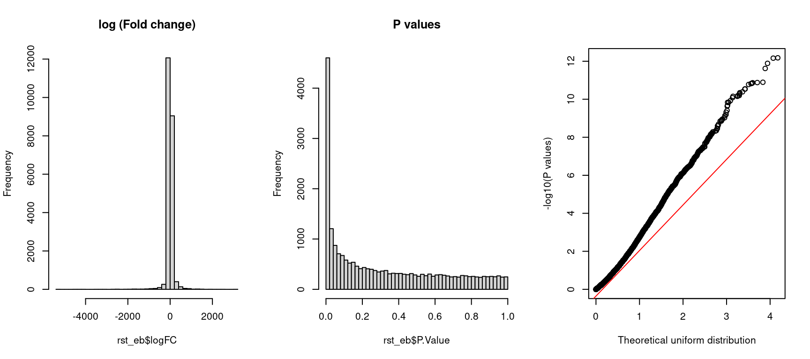
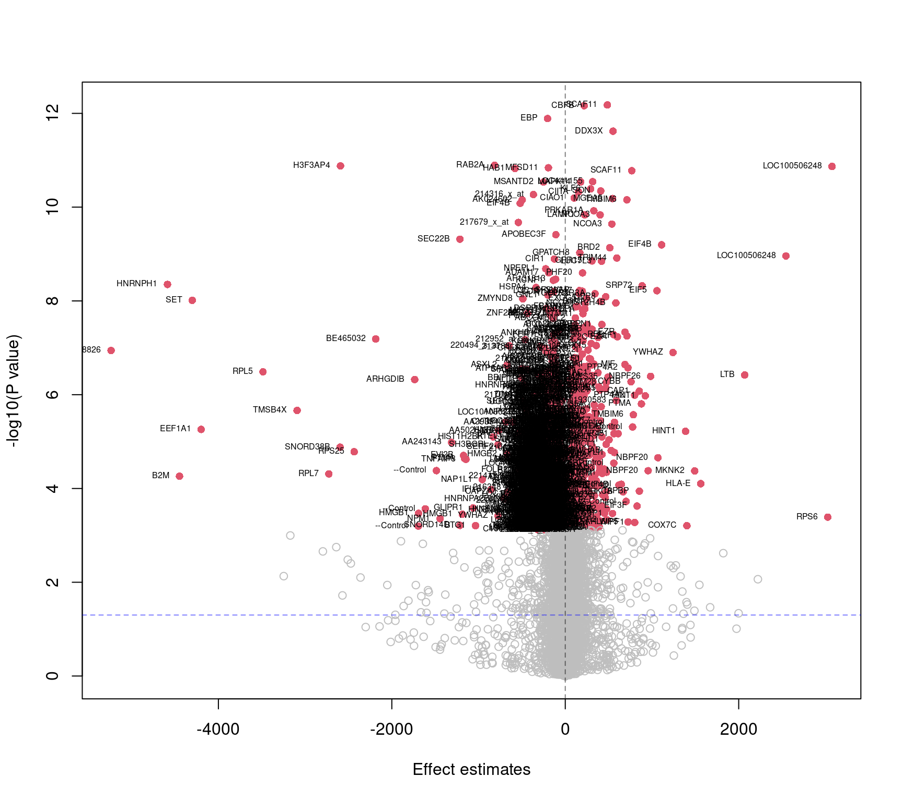

3 Differential gene expression analysis (DGEA)
Comparison of differential gene expression patterns in these conditions has enabled the identification of common elements that are significantly enriched in gene classes with particular functions such as protein synthesis, hormone delivery, and morphological plasticity. - Hormones, Brain and Behavior (Third Edition), 2017
Differential expression analysis result is a prerequisite for some of the pathway analysis methods. This chapter does not aim to demonstrate how to properly peform DGEA. Details and explainations of DEGA are omitted.
library(here)
library(limma)
library(dplyr)
source(file.path(here(), "src/utils.R"))
expr <- readRDS(file.path(here(), "data/expr.rds"))
pheno <- readRDS(file.path(here(), "data/pheno.rds"))
# data management
pheno <- pheno %>%
mutate(status = as.factor(as.integer(stress)))3.1 Comparison between smokers and non-smokers
A linear model is used with the constrast made between smokers and controls.
In this example, I use limma package and derived test statistics with
emperical bayes mderation on the stand errors.
y <- as.matrix(expr[, 3:ncol(expr)])
rownames(y) <- expr$IDENTIFIER
group <- pheno[["status"]]
mod <- model.matrix(~ 0 + group)
fit <- lmFit(y, mod)
contr <- makeContrasts(
contrasts = "group1-group2",
levels = colnames(coef(fit))
)
tmp <- contrasts.fit(fit, contr)
ebfit <- eBayes(tmp, robust = T)
rst_eb <- topTable(ebfit, number = Inf)
rst <- setNames(rst_eb, c("ID", "estimate", "AveExp", "t", "p.value", "FDR", "B"))3.2 Results visualization
The marked genes pass the FDR significant threshold at adjusted p-value <= 0.01. This DEA result will be used for the following pathway analysis.
par(mfrow = c(1, 3))
hist(rst_eb$logFC, breaks = 50, main = 'log (Fold change)')
hist(rst_eb$P.Value, breaks = 50, main = 'P values')
qqplot(
-log10(runif(nrow(rst_eb))),
-log10(rst_eb$P.Value),
xlab = 'Theoretical uniform distribution',
ylab = '-log10(P values)'
)
qqline(-log10(rst_eb$P.Value), distribution = qunif, col = "red")
volc_plot(rst, lab_col = "ID", lab_method = "fdr", fdr_thresh = 0.01)